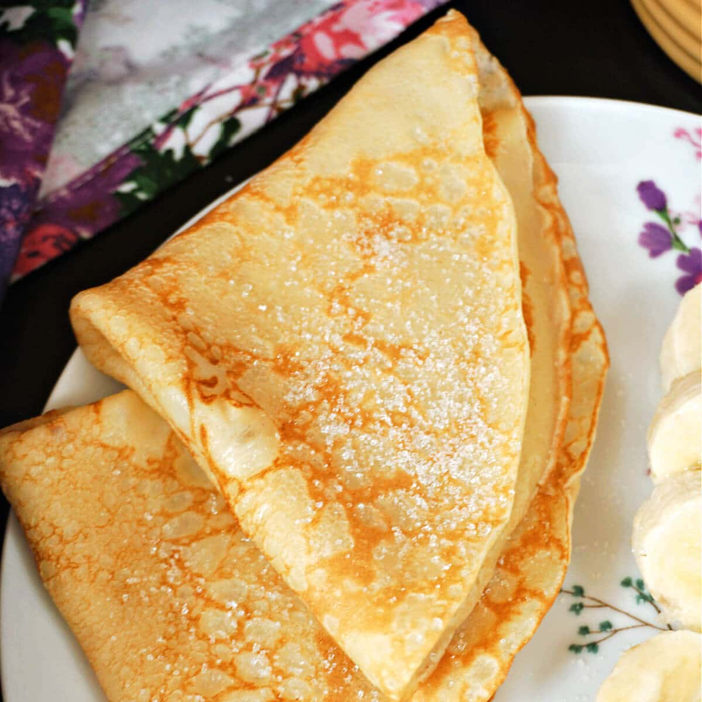

Crepes

Description
Kenny's homemade classic. Basic ingredients
combined to form a staple of breakfast. Not
the doughy iHop pancakes, the sleek and
golden-brown encrusted crepes.
Ingredients
- Flour
- Sugar
- Salt
- Milk
- Eggs
- Butter
Recipe
FOR ONE PERSON
- Add 1/2 cup flour, 1.5tbspns sugar,
1/4tspn salt, 3/4 cup whole milk,
1 large egg, 1 tbspn melted butter
to bowl
- Burner to medium heat
- Mix well
- Pour 1/3 cup mixture onto pan
- Flip when edges golden-brown